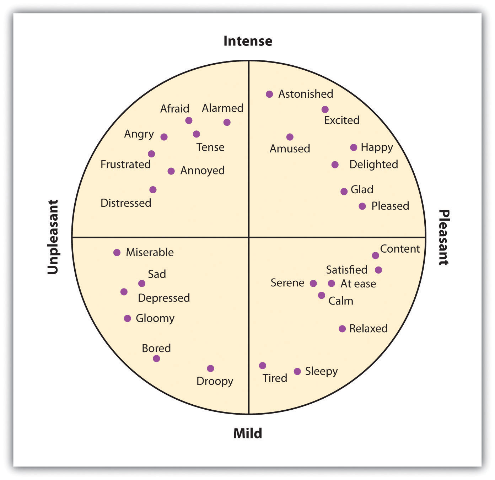
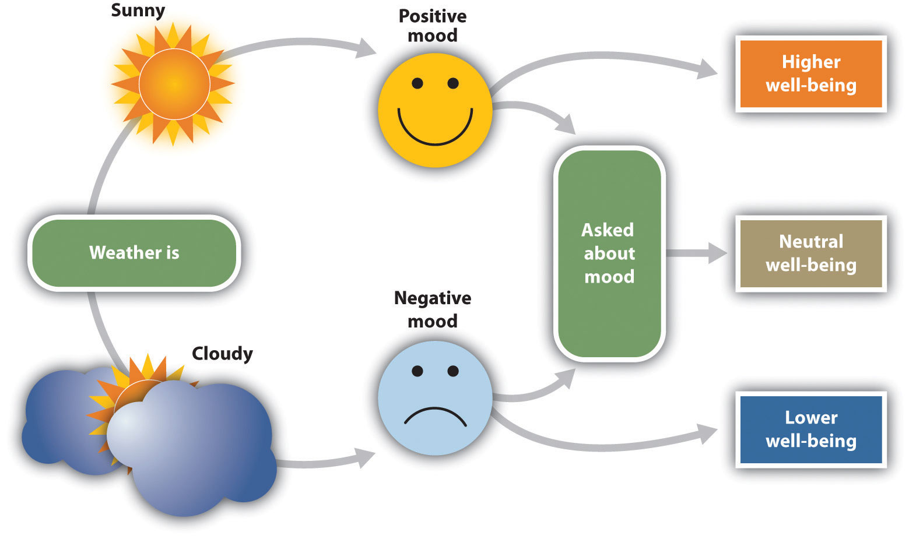
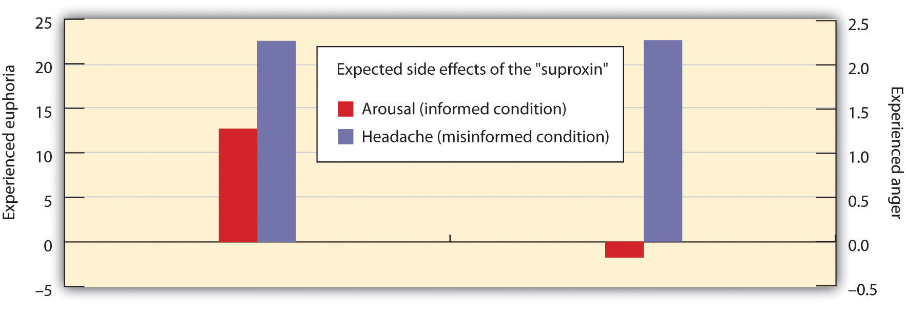

Although affect can be harmful if it is unregulated or unchecked, our moods and emotions normally help us function efficiently and in a way that increases our chances of survival (Bless, Bohner, Schwarz, & Strack, 1990; Schwarz et al., 1991).Bless, H., Bohner, G., Schwarz, N., & Strack, F. (1990). Mood and persuasion: A cognitive response analysis. Personality and Social Psychology Bulletin, 16, 331–345; Schwarz, N., Bless, H., Strack, F., Klumpp, G., Rittenauer-Schatka, H., & Simons, A. (1991). Ease of retrieval as information: Another look at the availability heuristic. Journal of Personality and Social Psychology, 61, 195–202. The experience of disgust helps us stay healthy by helping us avoid situations that are likely to carry disease (Oaten, Stevenson, & Case, 2009),Oaten, M., Stevenson, R. J., & Case, T. I. (2009). Disgust as a disease-avoidance mechanism. Psychological Bulletin, 135, 303–321., and the experience of embarrassment helps us respond appropriately to situations in which we may have violated social norms.
Affect signals either that things are going OK (e.g., because we are in a good mood or are experiencing joy or serenity) or that things are not going so well (we are in a bad mood, anxious, upset, or angry). When we are happy, we may seek out and socialize with others; when we are angry, we may attack; and when we are fearful, we are more likely to turn to safety. In short, our emotions help us to determine whether our interactions with others are appropriate, to predict how others are going to respond to us, and to regulate our behavior toward others.
Our emotions are determined in part by responses of the sympathetic nervous system (SNS)The division of the autonomic nervous system that is involved in preparing the body to respond to threats by activating the organs and the glands in the endocrine system.—the division of the autonomic nervous system that is involved in preparing the body to respond to threats by activating the organs and the glands in the endocrine system. The SNS works in opposition to the parasympathetic nervous system (PNS)The division of the autonomic nervous system that is involved in resting, digesting, relaxing, and recovering., the division of the autonomic nervous system that is involved in resting, digesting, relaxing, and recovering. When it is activated, the SNS provides us with energy to respond to our environment. The liver puts extra sugar into the bloodstream, the heart pumps more blood, our pupils dilate to help us see better, respiration increases, and we begin to perspire to cool the body. The sympathetic nervous system also acts to release stress hormones including epinephrine and norepinephrine. At the same time, the action of the PNS is decreased.
We experience the activation of the SNS as arousalThe changes in bodily sensations caused by the activation of the sympathetic nervous system, including increased blood pressure, heart rate, perspiration, and respiration.—changes in bodily sensations, including increased blood pressure, heart rate, perspiration, and respiration. Arousal is the feeling that accompanies strong emotions. I’m sure you can remember a time when you were in love, angry, afraid, or very sad and experienced the arousal that accompanied the emotion. Perhaps you remember feeling flushed, feeling your heart pounding, feeling sick to your stomach, or having trouble breathing.
The arousal that we experience as part of our emotional experience is caused by the activation of the sympathetic nervous system.
The experience of emotion is also controlled in part by one of the evolutionarily oldest parts of our brain—the part known as the limbic system—which includes several brain structures that help us experience emotion. Particularly important is the amygdalaThe region in the limbic system that is primarily responsible for regulating our perceptions of, and reactions to, aggression and fear., the region in the limbic system that is primarily responsible for regulating our perceptions of, and reactions to, aggression and fear. The amygdala has connections to other bodily systems related to emotions, including the facial muscles, which perceive and express emotions, and it also regulates the release of neurotransmitters related to stress and aggression (Best, 2009).Best, B. (2009). The amygdala and the emotions. In Anatomy of the mind (chap. 9). Retrieved from Welcome to the World of Ben Best website: http://www.benbest.com/science/anatmind/anatmd9.html When we experience events that are dangerous, the amygdala stimulates the brain to remember the details of the situation so that we learn to avoid it in the future (Sigurdsson, Doyère, Cain, & LeDoux, 2007; Whalen et al., 2001).Sigurdsson, T., Doyère, V., Cain, C. K., & LeDoux, J. E. (2007). Long-term potentiation in the amygdala: A cellular mechanism of fear learning and memory. Neuropharmacology,52(1), 215–227; Whalen, P. J., Shin, L. M., McInerney, S. C., Fischer, H., Wright, C. I., & Rauch, S. I. (2001). A functional MRI study of human amygdala responses to facial expressions of fear versus anger. Emotion, 1, 70–83.
The limbic system is a part of the brain that includes the amygdala. The amygdala is an important regulator of emotions.
The basic emotionsThe emotions of anger, contempt, disgust, fear, happiness, sadness, and surprise that are based primarily on the arousal produced by the SNS and that do not require much cognitive processing. (anger, contempt, disgust, fear, happiness, sadness, and surprise) are emotions that are based primarily on the arousal produced by the SNS and that do not require much cognitive processing. These emotions happen quickly, without the need for a lot of thought or interpretation. Imagine, for instance, your fearful reaction to the sight of a car unexpectedly pulling out in front of you while you are driving, or your happiness in unexpectedly learning that you won an important prize. You immediately experience arousal, and in the case of negative emotions, the arousal may signal that quick action is needed.
Paul Ekman and his colleagues (Ekman, 1992; 2003)Ekman, P. (1992). Are there basic emotions? Psychological Review, 99(3), 550–553; Ekman, P. (2003). Emotions revealed: Recognizing faces and feelings to improve communication and emotional life. New York, NY: Times Books/Henry Holt and Co. studied the expression and interpretation of the basic emotions in a variety of cultures, including those that had had almost no outside contact (such as Papua New Guinea). In his research, he showed people stimuli that would create a given emotion (such as a dead pig on the ground to create disgust) and videotaped the people as they expressed the emotion they would feel in that circumstance.
Ekman then asked people in other cultures to identify the emotions from the videotapes. He found that the basic emotions were cross-cultural in the sense that they are expressed and experienced consistently across many different cultures. A recent meta-analysis examined the perception of the basic emotions in 162 samples, with pictures and raters from many countries, including New Guinea, Malaysia, Germany, and Ethiopia. The analysis found that in only 3% of these samples was even a single basic emotion recognized at rates below chance (Elfenbein & Ambady, 2002).Elfenbein, H. A., & Ambady, N. (2002). On the universality and cultural specificity of emotion recognition: A meta-analysis. Psychological Bulletin, 128(2), 203–235.
Figure 3.1
The secondary emotions are derived from the basic emotions but are more cognitive in orientation (Russell, 1980).Russell, J. A. (1980) A circumplex model of affect. Journal of Personality and Social Psychology, 39, 1161–1178.
In comparison to the basic emotions, other emotions, such as guilt, shame, and embarrassment, are accompanied by relatively lower levels of arousal and relatively higher levels of cognitive activity. When a close friend of yours wins a prize that you thought you had deserved, you might well feel depressed, angry, resentful, and ashamed. You might mull over the event for weeks or even months, experiencing these negative emotions each time you think about it (Martin & Tesser, 1996).Martin, L. L., & Tesser, A. (Eds.). (1996). Some ruminative thoughts. Hillsdale, NJ: Lawrence Erlbaum Associates. In this case, although there is at least some arousal, your emotions are more highly determined by your persistent, and negative, thoughts. As you can see in Figure 3.1, there are a large number of these secondary emotionsEmotions that provide us with more complex feelings about our social worlds and that are more cognitively based—for example, guilt, shame, and embarrassment.—emotions that provide us with more complex feelings about our social worlds and that are more cognitively based.
Although there are many similarities across cultures in how we experience emotions, there are also some differences (Marsh, Elfenbein, & Ambady, 2003).Marsh, A. A., Elfenbein, H. A., & Ambady, N. (2003). Nonverbal “accents”: Cultural differences in facial expressions of emotion. Psychological Science, 14(4), 373–376. In Japan, there is a tendency to hide emotions in public, which makes them harder for others to perceive (Markus & Kitayama, 1991; Triandis, 1994).Markus, H., & Kitayama, S. (1991). Culture and the self: Implications for cognition, emotion and motivation. Psychological Review, 2, 224–253; Triandis, H. C. (1994). Culture and social behavior. New York, NY: McGraw-Hill Book Company. And as we would expect on the basis of cultural differences between individualism and collectivism, emotions are more focused on other-concern in Eastern cultures, such as Japan and Turkey, but relatively more focused on self-concern in Western cultures (Kitayama, Mesquita, & Karasawa, 2006; Uchida, Kitayama, Mesquita, Reyes, & Morling, 2008).Kitayama, S., Mesquita, B., & Karasawa, M. (2006). Cultural affordances and emotional experience: Socially engaging and disengaging emotions in Japan and the United States. Journal of Personality and Social Psychology, 91, 890–903; Uchida, Y., Kitayama, S., Mesquita, B., Reyes, J. A. S., & Morling, B. (2008). Is perceived emotional support beneficial? Well-being and health in independent and interdependent cultures. Personality and Social Psychology Bulletin, 34, 741–754. Ishii, Reyes, and Kitayama (2003)Ishii, K., Reyes, J. A., & Kitayama, S. (2003). Spontaneous attention to word content versus emotional tone: Differences among three cultures. Psychological Science, 14, 39–46. found that Japanese students paid more attention to the emotional tone of voice of other speakers than did American students, suggesting that the Japanese students were particularly interested in determining the emotions of others. Self-enhancing emotions such as pride and anger are more culturally appropriate emotions to express in Western cultures, whereas other-oriented emotions such as friendliness and shame are seen as more culturally appropriate in Eastern cultures. Similarly, Easterners experience more positive emotions when they are with others, whereas Westerners are more likely to experience positive emotions when they are alone and as a result of their personal accomplishments (Kitayama, Karasawa, & Mesquita, 2004; Masuda & Kitayama, 2004).Kitayama, S., Karasawa, M., & Mesquita, B. (Eds.). (2004). Collective and personal processes in regulating emotions: Emotion and self in Japan and the United States. Mahwah, NJ: Lawrence Erlbaum Associates; Masuda, T., & Kitayama, S. (2004). Perceiver-induced constraint and attitude attribution in Japan and the US: A case for the cultural dependence of the correspondence bias. Journal of Experimental Social Psychology, 40(3), 409–416.
There are also gender differences in emotional experiences. Women report that they are more open to feelings overall (Costa, Terracciano, & McCrae, 2001),Costa, P., Jr., Terracciano, A., & McCrae, R. R. (2001). Gender differences in personality traits across cultures: Robust and surprising findings. Journal of Personality and Social Psychology, 81, 322–331. are more likely to express their emotions in public (Kring & Gordon, 1998),Kring, A. M., & Gordon, A. H. (1998). Sex differences in emotion: Expression, experience, and physiology. Journal of Personality and Social Psychology, 74(3), 686–703. and are more accurate and articulate in reporting the feelings of others (Barrett, Lane, Sechrest, & Schwartz, 2000).Barrett, L. F., Lane, R., Sechrest, L., & Schwartz, G. (2000). Sex differences in emotional awareness. Personality and Social Psychology Bulletin, 26, 1027–1035. These differences show up particularly in terms of emotions that involve social relationships. Kring and Gordon (1998)Kring, A. M., & Gordon, A. H. (1998). Sex differences in emotion: Expression, experience, and physiology. Journal of Personality and Social Psychology, 74(3), 686–703. had male and female students watch film clips that portrayed sadness, happiness, or fear and found that the women reacted more visibly to each film. Coats and Feldman (1996)Coats, E. J., & Feldman, R. S. (1996). Gender differences in nonverbal correlates of social status. Personality and Social Psychology Bulletin, 22, 1014–1022. found that it is easier to read the emotions that women express. Some of these observed gender differences in emotional experiences and expression are biological in orientation, but they are also socialized through experience.
One function of mood is to help us determine how we should evaluate our current situation. Positive moods will likely lead us to maintain our current activities, which seem to be successful, whereas negative moods suggest that we may wish to attempt to change things to improve our situation. And moods have other influences on our cognition and behavior: Positive moods may lead us to think more creatively and to be more flexible in how we respond to opinions that are inconsistent with cultural norms (Ashton-James, Maddux, Galinsky, & Chartrand, 2009).Ashton-James, C. E., Maddux, W. W., Galinsky, A. D., & Chartrand, T. L. (2009). Who I am depends on how I feel: The role of affect in the expression of culture. Psychological Science, 20(3), 340–346. Ito, Chiao, Devine, Lorig, and Cacioppo (2006)Ito, T., Chiao, K., Devine, P. G., Lorig, T., & Cacioppo, J. (2006). The influence of facial feedback on race bias. Psychological Science, 17, 256–61. found that people who were smiling were also less prejudiced.
Mood states are also powerful determinants of our current well-being. To study how people use mood states as information to help them determine their current well-being, Norbert Schwarz and Gerald Clore (1983)Schwarz, N., & Clore, G. L. (1983). Mood, misattribution, and judgments of well-being: Informative and directive functions of affective states. Journal of Personality and Social Psychology, 45, 513–523. called participants on the telephone, pretending that they were researchers from a different city conducting a survey. Furthermore, they varied the day on which they made the calls, such that some of the participants were interviewed on sunny days and some were interviewed on rainy days. During the course of the interview, the participants were asked to report on their current mood states and also on their general well-being. Schwarz and Clore found that the participants reported better moods and greater well-being on sunny days than they did on rainy days.
Schwarz and Clore wondered whether people were using their current mood (“I feel good today”) to determine how they felt about their life overall. To test this idea, they simply asked half of their respondents about the local weather conditions at the beginning of the interview. The idea was to subtly focus these participants on the fact that the weather might be influencing their mood states. And they found that as soon as they did this, although mood states were still influenced by the weather, the weather no longer influenced perceptions of well-being (Figure 3.2 "Mood as Information"). When the participants were aware that their moods might have been influenced by the weather, they realized that the moods were not informative about their overall well-being, and so they no longer used this information. Similar effects have been found for mood that is induced by music or other sources (Keltner, Locke, & Audrain, 1993; Savitsky, Medvec, Charlton, & Gilovich, 1998).Keltner, D., Locke, K. D., & Audrain, P. C. (1993). The influence of attributions on the relevance of negative feelings to personal satisfaction. Personality and Social Psychology Bulletin, 19(1), 21–29; Savitsky, K., Medvec, V. H., Charlton, A. E., & Gilovich, T. (1998). “What, me worry?” Arousal, misattribution and the effect of temporal distance on confidence. Personality and Social Psychology Bulletin, 24(5), 529–536.
Figure 3.2 Mood as Information
The current weather influences people’s judgments of their well being, but only when they are not aware that it might be doing so. After Schwarz and Clore (1983).Schwarz, N., & Clore, G. L. (1983). Mood, misattribution, and judgments of well-being: Informative and directive functions of affective states. Journal of Personality and Social Psychology, 45, 513–523.
Even moods that are created very subtly can have effects on perceptions. Fritz Strack and his colleagues (Strack, Martin, & Stepper, 1988)Strack, F., Martin, L. L., & Stepper, S. (1988). Inhibiting and facilitating conditions of the human smile: A nonobtrusive test of the facial feedback hypothesis. Journal of Personality and Social Psychology, 54, 768–777. had participants rate how funny cartoons were while holding a writing pen in their mouth such that it forced them either to use muscles that are associated with smiling or to use muscles that are associated with frowning (Figure 3.3). They found that participants rated the cartoons as funnier when the pen created muscle contractions that are normally used for smiling rather than frowning. And Stepper and Strack (1993)Stepper, S., & Strack, F. (1993). Proprioceptive determinants of emotional and nonemotional feelings. Journal of Personality and Social Psychology, 64(2), 211–220. found that people interpreted events more positively when they were sitting in an upright position rather than a slumped position. Even finding a coin in a pay phone or being offered some milk and cookies is enough to put people in good moods and to make them rate their surroundings more positively (Clark & Isen, 1982; Isen & Levin, 1972; Isen, Shalker, Clark, & Karp, 1978).Clark, M. S., & Isen, A. M. (1982). Toward understanding the relationship between feeling states and social behavior. In A. H. Hastorf & A. M. Isen (Eds.), Cognitive social psychology (pp. 73–108). New York. NY: Elsevier/North-Holland; Isen, A. M., & Levin, P. F. (1972). Effect of feeling good on helping: Cookies and kindness. Journal of Personality and Social Psychology, 21, 384–388.; Isen, A. M., Shalker, T. E., Clark, M., & Karp, L. (1978). Affect, accessibility of material in memory and behavior: A cognitive loop? Journal of Personality and Social Psychology, 36, 1–12.
Figure 3.3
The position of our mouth muscles can influence our mood states (Strack, Martin, & Stepper, 1988).Strack, F., Martin, L. L., & Stepper, S. (1988). Inhibiting and facilitating conditions of the human smile: A nonobtrusive test of the facial feedback hypothesis. Journal of Personality and Social Psychology, 54, 768–777.
These results show that our body positions, especially our facial expressions, influence our affect. We may smile because we are happy, but we are also happy because we are smiling. And we may stand up straight because we are feeling proud, but we also feel proud because we are standing up straight (Stepper, & Strack, 1993).Stepper, S., & Strack, F. (1993). Proprioceptive determinants of emotional and nonemotional feelings. Journal of Personality and Social Psychology, 64(2), 211–220.
Although arousal is necessary for emotion, it is not sufficient. Arousal becomes emotion only when it is accompanied by a label or by an explanation for the arousal (Schachter & Singer, 1962).Schachter, S., & Singer, J. (1962). Cognitive, social, and physiological determinants of emotional state. Psychological Review, 69(5), 379–399. Thus, although emotions are usually considered to be affective in nature, they really represent an excellent example of the joint influence of affect and cognition. We can say, then, that emotions have two factors—an arousal factor and a cognitive factor (James, 1890; Schachter & Singer, 1962).James, W. (1890). The principles of psychology. New York, NY: Dover; Schachter, S., & Singer, J. (1962). Cognitive, social, and physiological determinants of emotional state. Psychological Review, 69(5), 379–399.
Emotion = arousal + cognitionIn some cases, it may be difficult for people who are experiencing a high level of arousal to accurately determine which emotion they are experiencing. That is, they may be certain that they are feeling arousal, but the meaning of the arousal (the cognitive factor) may be less clear. Some romantic relationships, for instance, are characterized by high levels of arousal, and the partners alternately experience extreme highs and lows in the relationship. One day they are madly in love with each other, and the next they are having a huge fight. In situations that are accompanied by high arousal, people may be unsure what emotion they are experiencing. In the high-arousal relationship, for instance, the partners may be uncertain whether the emotion they are feeling is love, hate, or both at the same time. Misattribution of arousalThe incorrect labeling of the source of the arousal that we are experiencing. occurs when people incorrectly label the source of the arousal that they are experiencing.
Figure 3.4 Misattributing Emotion
The results of an experiment by Schachter and Singer (1962)Schachter, S., & Singer, J. (1962). Cognitive, social, and physiological determinants of emotional state. Psychological Review, 69(5), 379–399. supported the two-factor theory of emotion. The participants who did not have a clear label for their arousal were more likely to take on the emotion of the confederate.
Misattributing Arousal
If you think a bit about your own experiences of different emotions, and if you consider the equation that suggests that emotions are represented by both arousal and cognition, you might start to wonder how much was determined by each. That is, do we know what emotion we are experiencing by monitoring our feelings (arousal) or by monitoring our thoughts (cognition)?
Stanley Schachter and Jerome Singer (1962)Schachter, S., & Singer, J. (1962). Cognitive, social, and physiological determinants of emotional state. Psychological Review, 69(5), 379–399. addressed this question in a well-known social psychological experiment. Schachter and Singer believed that the cognitive part of the emotion was critical—in fact, they believed that the arousal that we are experiencing could be interpreted as any emotion, provided we had the right label for it. Thus they hypothesized that if individuals are experiencing arousal for which they have no immediate explanation, they will “label” this state in terms of the cognitions that are most accessible in the environment. On the other hand, they argued that people who already have a clear label for their arousal would have no need to search for a relevant label and therefore should not experience an emotion.
In the research experiment, the male participants were told that they would be participating in a study on the effects of a new drug, called “suproxin,” on vision. On the basis of this cover story, the men were injected with a shot of epinephrine, a drug that produces physiological arousal. The idea was to give all the participants arousal; epinephrine normally creates feelings of tremors, flushing, and accelerated breathing in people.
Then, according to random assignment to conditions, the men were told that the drug would make them feel certain ways. The men in the epinephrine-informed condition were told the truth about the effects of the drug—they were told that other participants had experienced tremors and that their hands would start to shake, their hearts would start to pound, and their faces might get warm and flushed. The participants in the epinephrine-uninformed condition, however, were told something untrue—that their feet would feel numb, that they would have an itching sensation over parts of their body, and that they might get a slight headache. The idea was to make some of the men think that the arousal they were experiencing was caused by the drug (the informed condition), whereas others would be unsure where the arousal came from (the uninformed condition).
Then the men were left alone with a confederate who they thought had received the same injection. While they were waiting for the experiment (which was supposedly about vision) to begin, the confederate behaved in a wild and crazy (Schachter and Singer called it “euphoric”) manner. He wadded up spitballs, flew paper airplanes, and played with a hula hoop. He kept trying to get the participants to join in his games. Then right before the vision experiment was to begin, the participants were asked to indicate their current emotional states on a number of scales. One of the emotions they were asked about was euphoria.
If you are following the story here, you will realize what was expected—that the men who had a label for their arousal (the informed group) would not be experiencing much emotion—they had a label already available for their arousal. The men in the misinformed group, on the other hand, were expected to be unsure about the source of the arousal—they needed to find an explanation for their arousal, and the confederate provided one. Indeed, as you can see in Figure 3.4 "Misattributing Emotion", this is just what the researchers found.
Then Schachter and Singer did another part of the study, using new participants. Everything was exactly the same except for the behavior of the confederate. Rather than being euphoric, he acted angry. He complained about having to complete the questionnaire he had been asked to do, indicating that they questions were stupid and too personal. He ended up tearing up the questionnaire that he was working on, yelling, “I don’t have to tell them that!” Then he grabbed his books and stormed out of the room.
What do you think happened in this condition? The answer, of course, is, exactly the same thing—the misinformed participants experienced more anger than did the informed participants. The idea is that because cognitions are such strong determinants of emotional states, the same state of physiological arousal could be labeled in many different ways, depending entirely on the label provided by the social situation.